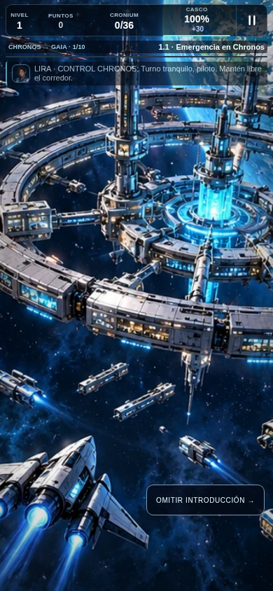
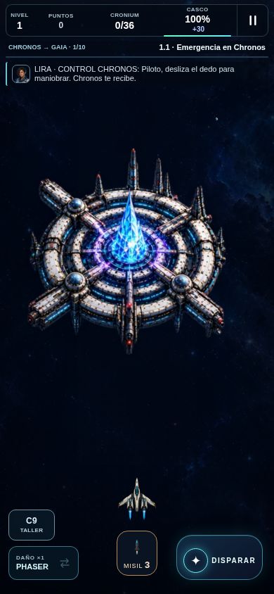
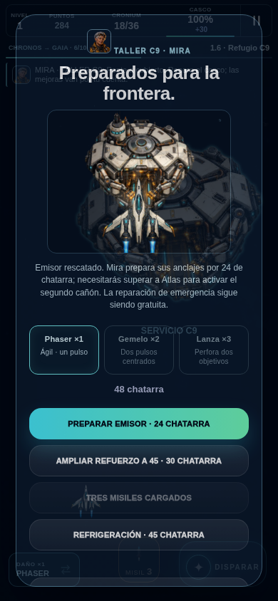
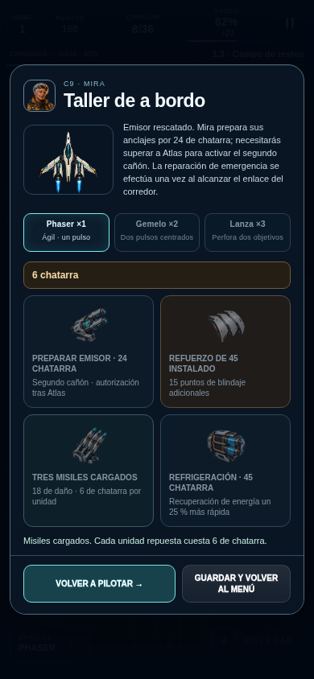
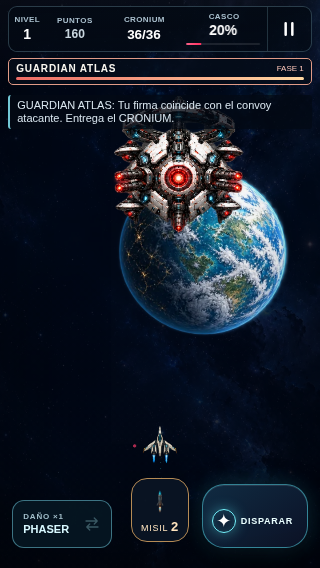
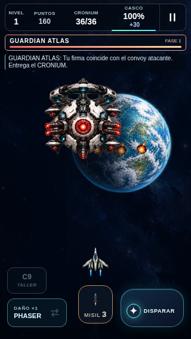
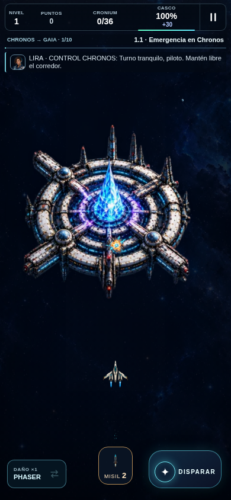
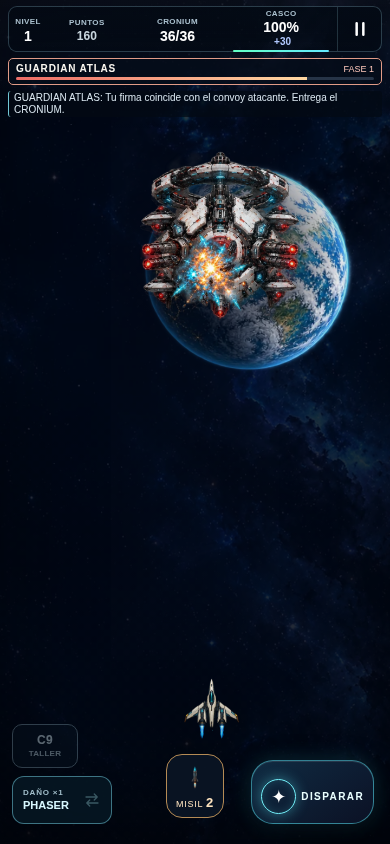

NEON CRONIUM · nivel uno dinámico
Capturas auténticas del ejecutable. Antes:99bf90b. Después:da3f4b8. Las escenas controladas se identifican y no certifican balance humano o iPhone físico.
Apertura
Antes: partida natural99, introducción ilustrada. Después: escena controlada da3, Chronos del renderer jugable desde el inicio.

Antes ·99bf90b
Después ·da3f4b8Taller C9
Antes: parada orbital natural99. Después: tallerHUD controlado da3 con saldo/estado declarados; los cuatro diseños están integrados, no representan dinero ganado.

Antes ·99bf90b
Después ·da3f4b8Atlas y HUD en320×568
Ambas son escenas controladas del ejecutable. Se conserva el artev2; cambian movimiento, contraste y presentación. No son frames idénticos de un mismo encuentro.

Antes ·99bf90b
Después ·da3f4b8Explosión del misil
Después: captura controlada del misil físico,18de daño y poses de explosión. La captura previa sólo se incluye si existe exactamente la ruta documentada.

Antes ·99bf90b
Después ·da3f4b8Resultados controlados · Partida natural